Updated 2022-04-04
Table of contents
- Introduction
- The Builder
- Getting started
- Installing applications as reference
- Creating your own applications
- Data storage
- Relations
- Attributes
- Relationships
- Presets
- Indexing
- Triggers
- Policies
- Change logs
- Roles and access management
- Presentation and user interfaces
- Forms
- Form layouts
- Field options
- List fields
- Calendar fields
- Chart fields
- Form states
- Queries
- Query filters
- Help pages
- Translations
- Icons
- Menus
- Login forms
- Functions
- Frontend functions
- Backend functions
- Collections
- Building on applications
- Extension scenarios
- Accessing shared components
- Implementing small changes
- Important considerations
- User access
- Deletions
- Application transfers
- Exporting applications
- Importing applications
- Hosting a repository
- Optimizing for mobile devices
- Working with emails
- Date and time management
- CSV import and export
- Troubleshooting
Introduction
This is the documentation for building REI3 applications. REI3 is a free, open-source business application platform, which can run on-premise or from the cloud, on Windows and Linux. To learn how to setup and administrate REI3, please refer to the admin documentation.
REI3´s primary purpose is to fulfill business software requirements. Simple applications, like a system that manages company event attendance, can be built within a single hour. More complex applications, like absence management or a system to execute mail campaigns, require more time but are also easily buildable with REI3. Organizations using REI3 can save time and money by reducing dependency on costly software solutions for simple requirements, while cheaply addressing complex, niche requirements that no fitting solution is available for.
Most people with IT administration skills can utilize REI3 to address software requirements; it is however very useful to know and understand relational databases to make use of all features. REI3 provides access to low-level entities, such as database indexes, triggers, sub queries, functions and so on. With some background knowledge, complex relationships, business logic, access control as well as performance tuning can be implemented to build powerful, fast and scalable applications.
The Builder
Building REI3 applications is done exclusively with an integrated, graphical utility, simply called 'the Builder'. The Builder is included in all REI3 releases.
Using the Builder, individuals and organizations can create or change applications. Finished applications can then be exported as file and re-imported into other REI3 instances. Applications can therefore be built on one system and transferred to another. It is also possible to share applications with others by exchanging REI3 files or using online repositories.
Changing an application with the Builder can result in changes to the underlying data structure, potentially deleting data in the instance but also in other instances when transferring an application. Precautions must be taken accordingly:
- NEVER use the Builder in productive instances. To build, use the portable version of REI3 or run a separate REI3 instance. For critical instances, it is smart to run a copy of a productive system to confirm application changes before deploying to the final, productive instance.
- DO NOT make changes to applications from other authors - these are deleted when the application is updated. You can expand existing applications safely by adding custom data & UI on top of them inside your own applications. Please refer to Building on applications to learn more.
- ALWAYS consider carefully when deciding to delete data structures (relations/attributes). This will affect target instances and, if other applications build on yours, affect other applications as well. Renaming data structures is safe however.
To enable the Builder, you need to login into a running REI3 instance with an admin user. After enabling the maintenance mode, which will kick all non-admin users from the system, the Builder can be switched on. Once activated, the Builder can be accessed from its icon on the top-left corner of the main menu.
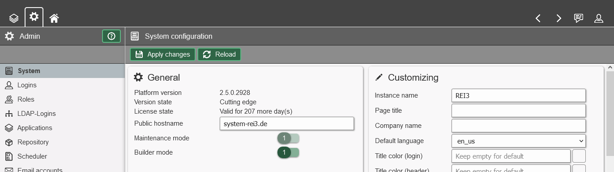
Getting started
Going into the Builder UI you will be presented with a list of installed applications. To create a new application, you only need to decide on a name and click on the save icon. The name can become important later as application names need to stay unique within a given REI3 instance. It is however no problem the change the name later.
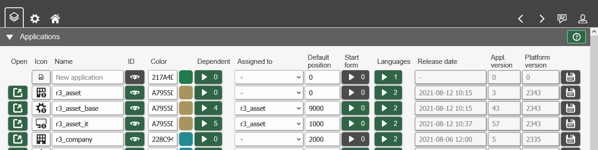
Installing applications as reference
To play around and see working examples, you can install applications from the REI3 repository from the admin UI. In a non-productive instance you can install, change, delete and re-install applications at any time. Installing finished applications can help with understanding how these are built and how specific options are used.
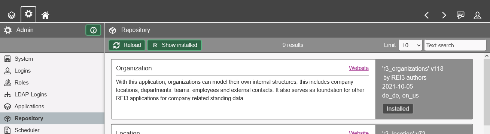
Creating your own applications
Creating a new application is straightforward. After opening the Builder, a list of installed applications is presented to you. The first line is reserved for creating new applications. By entering a unique name for the application and clicking the save icon, a new application is generated. You can then open the application to add things like data storage, menus, forms and so on.
There a few options when creating or updating the application itself:
- Name: A unique name, representing your application. Only important for transferring your application to other instances - users see a translated application title instead (see below).
- Depends on (optional): Dependencies to other applications. More details in Building on applications.
- Assigned to (optional): Application which serves as a parent to the selected application. Must be activated in 'depends on' first. This option effectively creates a hierarchy in the start and header menus. Currently the hierarchy is limited to 2 levels (1 parent, multiple children) - these might be expanded in the future.
- Icon (optional): An icon representing the application. Must be added to the application first.
- Color (optional): Freely selectable color. Is shown on the start page and on the header when the application is active. Can be overwritten in instances with customizing. Should be a color with low-brightness to contrast bright header fonts.
- Default position: Order in which application should appear in menus (smaller first). Can be overwritten in instances by admins. When 'assigned to' a parent application, positions affect the order underneath the parent application.
- Start form (optional): Depending on assigned roles, a different form can be shown when opening the application. Multiple rules for matching role membership with start form can be set; if no rule matches, the default start form is shown. A valid start form is required for the application to show up in the user´s menu.
- Languages (1 is required): Languages, the application is available in. A language is defined by its 5-letter language code (en_us, de_de, ch_cn, and so on). Be aware: You must provide translations for all languages that you define here - not doing this results in error strings being shown to users. Besides the application title, other entities (menus, forms, help pages, ...) require translations when creating them. You can also define a fallback language, which is used if a user selects a language that your application does not offer. To start, you should keep to a single translation and expand when needed.
Some options depend on other entities being created first (other applications to build on, forms to select as start form, icons to show). When creating an application these can be skipped and updated later.
In addition, a couple of non-editable meta data fields are shown. These are set when an updated application is exported. Please refer to Application transfers for more details.
- Release date: Current date when exported.
- Application version: Incremented by 1 when exported.
- Platform version: Version of the platform when exported.
Data storage
Applications that work with data usually need some sort of long-term data storage. REI3 is built on the well-established, relational database management system postgreSQL.
To store data in a relational database system, 'relations' are created in the form of database tables. Relations contain records for specific entities (for example students and classes of a school) and can be used to implement relationships between them (which students attend which classes). These concepts are widely taught but are not explained in detail in this documentation - it is important to understand however, that REI3 follows these closely. Relations, their attributes and, by extension, relationships work the same way in REI3 as they would when building an application with any common relational database system.
Relations and attributes are referenced in forms to display, create or update data in lists, fields, calendars and so on. They are also accessible in backend functions for complex data manipulation, calculations or other data related actions.
Relations
To store data for any entity, you create a relation - this will automatically create a corresponding database table with the same name. REI3 enforces valid names when things like relations are created. Optionally, you can also specify data retention settings for the relation.
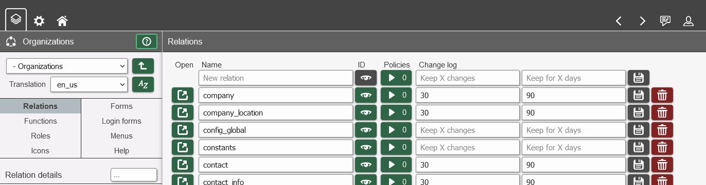
Relations are central to managing data in REI3. They contain all records, their values (following their attributes), indexes (mostly for performance tuning), presets (predefined records), triggers (automatically executed backend functions) and policies.
Attributes
An attribute is a data field for each record in a relation. When creating an attribute, a database column is added to its relation table with the same name.
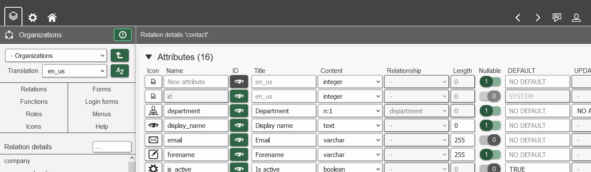
Adding an attribute has many more options available compared to relations:
- Icon: Default icon for this attribute. Used by attribute input fields on data forms if no other icon is defined.
- Name: Attribute name, needs to be unique within the relation.
- Title: A translated title - displayed in attribute input fields and list columns if not overwritten.
- Content: The content of the attribute - multiple content types exist.
- Integers: Numbers without decimal points (integer/bigint)
- Floats: Numbers with decimal points (real/double precision), inexact but enables fast calculations
- Numeric: Numbers with decimal points (numeric), exact but slow for calculations
- Text: Characters, stored as UTF8 (varchar, text)
- Boolean: TRUE/FALSE values
- Special types, which contents are managed by REI3:
- Relationship: Integer number (1:1, N:1), referring to primary key of another relation
- Files: JSON blob for meta data of uploaded files (files)
- Relationship: Target relation for relationship. Only available, if attribute content 1:1 or N:1 was selected.
- Length: Length of attribute value. Relevant for text (max. amount of characters) and files types (max. file size in KB).
- Nullable: Attribute values can be 'NULL' (non-existing).
- Default: If no attribute value is given, this default value is applied.
- ON UPDATE/DELETE: These define how records, connected via a relationship react when their partner is updated or deleted (refer to 'Relationships' for more details).
By default, an attribute with the name 'id' exists for each relation. This attribute serves as primary key for the record and cannot be removed. This is an abstraction that is required for REI3 to work. A primary key like this is often used when designing basic relationships - when needed, composite and unique keys can be created to serve specific needs.
Relationships
Two relations can be placed in a relationship by creating a 'relationship attribute' on either one of them, referring to the other relation. You can choose a 1:1 (one-to-one) or N:1 (many-to-one) relationship. Foreign keys and indexes are created automatically when using relationship attributes (unique index for 1:1 attributes, non-unique index for N:1).
A N:M (many-to-many) relationship can be created between two relations by creating a third relation with two N:1 attributes. This third relation can then hold other attributes as well, adding details to the N:M relationship. Example:
- Relation 1: student (details of student records)
- Relation 2: class (details of class records)
- Relation 3: student_class (N:1 attribute to 'student', N:1 attribute to 'class', integer attribute 'started in year' to describe first year of student attendance)
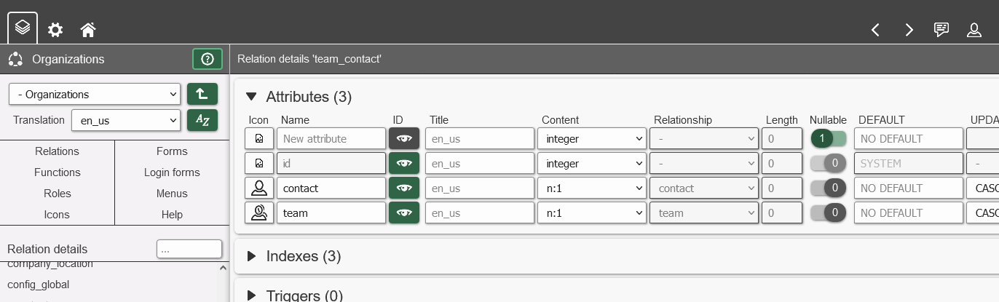
Relationship attributes use foreign keys to enforce the existence of referenced records. When a record that serves as relationship target is deleted, the foreign key becomes invalid. This also occurs, although more rarely, when the referenced key of such a record is changed. To deal with these cases, you can specify a desired behavior for 'ON DELETE' (referenced record is deleted) and 'ON UPDATE' (key of referenced record is changed):
- NO ACTION: Block the deletion of the original record.
- RESTRICT: Similar to NO ACTION, but does not allow deferring in a running transaction. This option is not important in most cases but is available when needed.
- CASCADE: Delete the record which is referencing the invalid relationship target. Often used in parent-to-child relationships - when parent is deleted, delete all children automatically.
- SET NULL: Replace the invalid value with NULL. Only works if the relationship attribute is nullable.
- SET DEFAULT: Replace the invalid value with defined default value. Only works if a default value is set.
Presets
Presets are predefined records that are shipped with your application. A preset consists of a name as well as attribute values. The preset name only serves to reference to the preset inside the Builder - it is not visible to any end user. When your application is transferred to a target instance, one record for each preset is created in the corresponding relation. All defined attribute values are applied to this record.
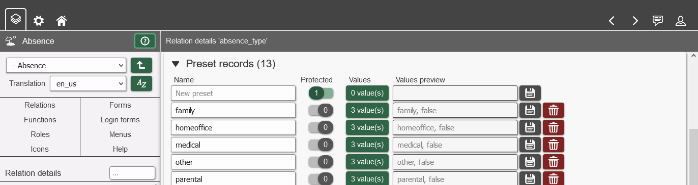
When you define your preset, you can choose to protect it and/or its attribute values. Protecting the preset itself, blocks deletion of its associated record, while protecting attribute values blocks updating these values. The protection settings can be mixed to serve different purposes:
- Protected record, protected values. For records that must stay a certain way for your application to work properly; this can be useful for workflow states.
- Protected record, unprotected values. Useful for central configuration records with customizable options.
- Unprotected record, protected values. Useful for cases in which a record is optional, but its values need to stay a certain way to be sensible.
- Unprotected record, unprotected values. Useful for sample data - can be overwritten, changed or deleted at will.
Important! When a record or its values are unprotected, they can be deleted/changed in the target instance. When updating your application in the instance, already deleted/changed preset records are not recreated or updated. REI3 follows this definition: An unprotected preset/value is optional and if a user in the target instance decides to delete/change it, it will stay that way.
Protected presets/preset values on the other hand are always updated. Since deletion/change is blocked, updates only occur if presets have changed themselves. When switching an unprotected preset/preset value to 'protected', deleted/changed presets/preset values are recreated/updated.
Preset values must be defined as their original value state. To see this state, you can open the data view on any relation; this will show the original attribute values. Some examples:
- Boolean values must be defined as TRUE/FALSE
- Date/time values must be defined in unix time (seconds since 1970-01-01 in UTC)
- File values (e. g. uploaded files) can currently not be added as presets.
Lastly, deleting presets will delete associated records as well. Independently of the protection setting, records of deleted presets will be deleted in the target instance during transfer.
Indexing
Indexing is a complex topic that books can and are written about. REI3 offers indexing to optimize database performance and enforce unique keys. Standard principles for database indexing can directly be applied here. Even though other resources are much better for learning about indexing, here are a couple of basics:
- Indexes serve to quickly find specific records without having to scan an entire relation.
- In general, indexes have a big impact on performance - especially on larger relations. A good index can speed up data retrieval a thousand-fold.
- As indexes serve to find records by certain criteria, attributes that are used in filters benefit from indexing a lot.
- Having indexes for specific attributes is important for good database performance; creating indexes for all attributes is a bad idea however. The more indexes exist, the slower changes to records become as indexes must be updated as well. In addition, each index has storage overhead, adding to the database size.
- Unique indexes can be used to enforce unique values in all kinds of attributes (unique names/numbers/dates/...). This is one use-case for indexing besides performance.
- Indexes can be used to enforce unique, composite keys by using multiple attributes to form a unique index.
Triggers
Triggers in REI3 are PostgreSQL database triggers. Database triggers react to events in the database and serve to apply logic, check inputs or block certain actions. When inserting, updating or deleting records in a relation, a trigger executes a defined backend function.
Multiple options exist for triggers:
- ON INSERT/UPDATE/DELETE: Event on the relation that the trigger reacts to.
- EACH ROW: Trigger executes function for each affected row or once for the statement. If set per row, NEW/OLD can be used to reference the record state as it was (OLD) and what it would be changed to (NEW).
- BEFORE/AFTER: Trigger executes function before or after the specified event has occured. BEFORE can be used to overwrite missing NULL values, while AFTER can be useful to work with changes over multiple relations ('see DEFERRABLE').
- CONSTRAINT: Similar to a regular trigger, but its timing can be changed (see 'DEFERRABLE').
- DEFERRABLE: If set, trigger may be executed at the end of a database transaction instead of immediately. As REI3 offers updates of joined relations in forms, a deferred trigger waits until all affected relations are updated and then executes its function.
- INITIALLY DEFERRED: Trigger will be deferred by default.
- Condition: A SQL condition, must return true for the trigger to execute the function.
- Execute: The function to execute. Must be a function that returns 'trigger'.
Policies
A relation policy can limit what specific records are accessible to a logged in user via their role memberships. This is done by using backend functions that serve as filter for specific actions. While forms, lists and other frontend elements can also filter records, relation policies are applied globally and cannot be circumvented by changing the frontend.
A policy can be set for different actions, these are:
- Select: Users can only see records based on the results of the policy; they have no way of knowing whether or how many other records exist.
- Update: Users can only change values of records based on the results of the policy.
- Delete: Users can only delete records based on the results of the policy.
Depending on the action, the frontend will either not show records (no select), disable inputs (select but no update) or block record deletion (no delete). Regardless of the frontend, relation policies will also be enforced on the backend when users attempt to select, update or delete records.
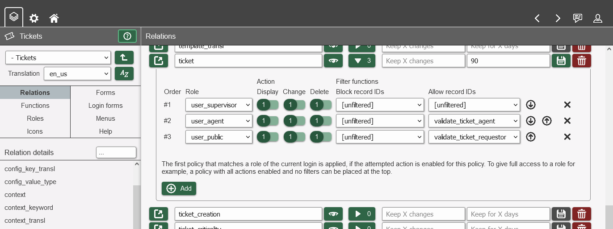
To create a policy, a role must be connected to at least one action. An 'allow' (whitelist) or 'block' (blacklist) filter function is used to define which records should be accessible. A filter function is a backend function that returns an array of record IDs (as in 'INTEGER[]' or 'bigint ARRAY'); the record IDs must match the relation for which the policy is defined. With the help of instance functions, such as 'has_role()' or 'get_login_id()', filter functions limit what records are accessible based on the currently logged in user.
Polices have a defined order. The first policy matching the attempted action of the logged in user with the selected role, is applied. If the user has multiple roles, only the first matching policy is applied. If full access is desired, a role can be assigned all actions and both filter functions kept empty (e. g. 'unfiltered'). If no policy is matched, full access is also granted.
Change logs
When data is changed in REI3 you can choose to automatically keep copies of these changes. These change retention settings are defined for relations. If nothing is set, no data changes are kept. Every relation has 2 settings for defining data change retention:
- Keep a number of changes. Change log keeps at least the specified amount of changes.
- Keep changes for a number of days. Change log keeps all changes for the specified amount of days.
A system task regularly deletes older changes, when the retention settings are satisfied. If both settings are used (number and days of changes), the more conservative setting wins. Example: 30 changes should be kept for 90 days. If there are more than 30 changes, they are all still being kept if they occurred within the last 90 days. If there are changes after 90 days, but still less than 30, they are also being kept.
Changes are visible to users in forms that access corresponding relations via the change log window. This will show all changes corresponding to joined relations (see Queries), but only for attributes that are accessible to the user via data input fields. If a user has access to a data field, and changes are available, they will be visible without further permissions being required.
The change retention cleanup job can be configured to run more or less often in the admin UI.
Roles and access management
Roles are used to control what a user can see and do in an application. Roles control:
- Data entity access: Access control for data structures, e. g. relations and attributes.
- Applied policies: Access control for specific records, which is defined via relation policies.
- Used start forms: Which form is shown when a user opens an application. Defined for the application.
- Visible menus: Which menus are shown for a role member.
Roles in REI3 are cumulative - the more roles a user has, the more access is available. Following that, there is no 'deny' option. When you need to deny a group of users access, you remove the corresponding access from the role and create a second one, granting this specific access. This second role is then only assigned to users that should still receive this access. In general, it serves to have a role concept that is as simple as possible.
When creating a role, you need to choose a unique role name within your application. Titles and descriptions serve to explain the role to administrators of other REI3 instances as they will be shown in the admin UI. They are not visible to non-admin users.
Roles can be members of other roles. This enables access inheritance with no fixed limit on how many levels of inheritance are allowed. A user logging in, receives access following assigned roles and the memberships of these roles (and the memberships of those roles, and so on).
When applications build on other applications (see Building on applications) usually some access to the other application´s data is necessary. This is solved by making your roles members of roles from other applications. In many cases data access is desired but users from one application should not see user interfaces from the other; this is solved by creating 'data only' roles (no menu access specified).
Lastly, the option 'assignable' controls whether a role is directly assignable to a user. If set to 'false' the specific role is hidden in the admin UI and can only be assigned indirectly via membership of other roles. This can be useful for 'data only' roles or for complex role hierarchies.
Presentation and user interfaces
Besides managing data, most systems require some kind of frontend. For this purpose, REI3 includes forms to display and manipulate data and menus to navigate your application.
Forms serve to display and manipulate data. They can also be used to execute actions or react to user inputs via frontend functions.
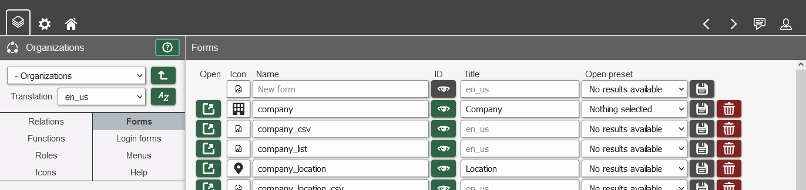
When creating a form, you can specify the following:
- Icon: An icon representing the form. Shown in the form header, if not overwritten by a menu entry.
- Name: A unique name in your application. Only for your own reference, not shown to users.
- Title: The translated title of your form (see Translations). Shown to users. Can be overwritten by a menu entry.
- Open preset: Option to open a specific preset record when opening a form. Useful for central configuration records but otherwise not often used.
Once created, you can start designing your form. In any case you build either one of these two forms:
- Data: You define a query to create or update relation records. This will give you access to attribute input fields from the selected and joined relations.
- Non-data: You do not define a query. These kinds of forms usually serve purposes other than record manipulation. Some examples:
- Showing a full page list to view and navigate to relation records.
- Showing a calendar to view and access time based records.
- Showing a dashboard of multiple lists and buttons to reach different parts of your application.
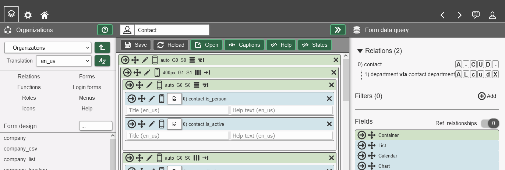
Forms are designed by adding fields. Fields serve to create layouts, manipulate data, execute actions and more. Available fields are shown in the sidebar of the form UI inside the Builder, depending on what the form has access to. These types of fields exist:
- Container: These construct the layout of your form. Containers 'contain' other fields, including other containers to create simple or complex layouts.
- List/calendar: A list or calendar representation of relation records. By default, independent of the current data form record but can use filters to access attribute input field values or the currently open record. Common use-cases:
- Single page: A calendar or list filling the entire form. Gives overview and access to specific records.
- Dashboard page: Part of a dashboard, showing unrelated relation records.
- Contextual: As part of a data form, showing contextually connected records to the record currently being handled by the data form.
- Chart: A chart, using data based on, and filtered by, a defined query.
- Header: Simply text with an optional preceding icon. Used for titles or small explanations.
- Button: Actions that a user can execute (see Button fields).
- Data: Data forms only. Dependent on the defined query, attribute input fields are available for record view and manipulation. They are labeled by a relation index number, the relation and the attribute name, as in '0) employee.forename'.
- Depending on the attribute type, fields will behave differently and offer different options. For example: Text attributes can be presented as a line input, a URL or with a richtext editor, while integer attributes can be presented as number or date inputs.
- Data by referring relationship: Like data fields but for N:1 & N:M relationships. With these fields users can see and manipulate multiple relationship references at once. Depending on the field options, they can be displayed as multi-input dropdowns or checkboxes.
To summarize: A form can handle a relation record by defining a query (data) or not (non-data). It consists entirely of fields, with container fields being used to create a layout while containing other fields. To create/manipulate a record, attribute input fields are available for selected relations (see Queries), while many options exist to customize these (see Field options). Lastly, list fields exist to give overview and access to records with or without context to a currently handled record.
REI3´s form layouts are primarily based on the CSS standard 'Flexbox'. Every container field in REI3 is a flexbox container, which configures its own size as well as layout characteristics for its children.
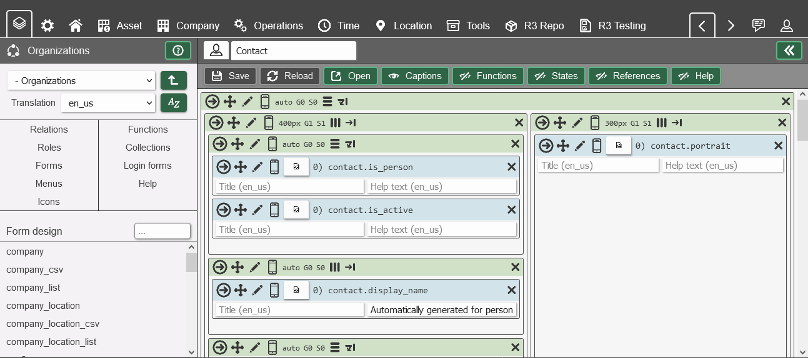
The most important concept is the flex flow. Every container decides, whether its contained fields (children) will 'flow' in a row (from left to right) or in a column (from top to bottom). In addition to the flow direction, the container decides whether its children will 'wrap', meaning they will move into a new row or column if the available space is insufficient. Disabling wrapping will result in the fields needing to shrink their sizes or expand their parents size resulting in compact fields or scrolling, depending on the parents configuration and available space.
To create specific layouts, row and column containers are usually mixed. An example: To create a form with 3 columns next to each other, with multiple fields in each column, the following containers can be used:
- 1 parent Container with a 'row' layout, containing 3 child containers, 1 for each column. Wrapping is enabled so that if the form is too small, the 3 column containers move underneath each other to properly display their content without horizontal scrolling.
- 3 child containers each having a 'column' layout, meaning that their children fields are displayed underneath each other. Wrapping is disabled, as forms are usually designed to be scrolled vertically.
If you are inexperienced with Flexbox, it is best to play around with containers in the form builder. Basically any layout can be created by mixing container configurations. Important to note: Non-container fields do not have layout configuration. If you need to specifically change the layout of a single non-container field (its size for example), you place your single field inside a new container field and change the container layout. This is done to keep layout options and complexity to container fields only.
When editing a container field, the following options are available:
- Show in mobile view: If disabled, this field (and its children) are not visible when accessing REI3 via a mobile device.
- Base size: Initial size of the container (width if inside row layout, height if inside column layout) in pixels. Is affected by its grow/shrink factors (see below).
- Grow/shrink factor: A number compared between all children inside the same container. A field with a factor of 3 will grow/shrink 3 times more than a field with a factor of 1. Growing and shrinking occur when more/less space is available than the field requires.
- Grows/shrinks to: Percentage value of the maximum/minimum size (from the base size) a container will grow/shrink to.
- Wrap content: Move children fields to a new line (row/column) if space is insufficient. If disabled, fields are shrunk, parents expanded or scrolling used, depending on the configuration of the parent and its available space.
- Direction: Place children in a row (left-to-right) or column (top-to-bottom) layout.
- Justify content: Defines the alignment of children on the main axis (row: x, column: y).
- Align items: Defines the alignment of children on the cross axis (row: y, column: x).
- Align content: Only relevant if a row or column has more than one line (wrapping enabled). Defines the alignment of children with the lines.
Field options
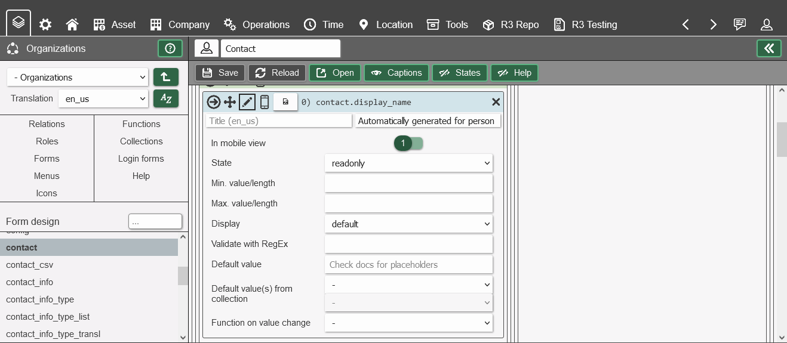
Depending on the field content, different options are available:
- State: Available to all fields, default state of field.
- Hidden: Field is hidden. Useful in combination with form states, showing fields only if certain conditions are met.
- Default: Field is shown. Data fields are automatically set to 'readonly' if the user is missing permissions and to 'required' if the data field attribute is not nullable.
- Optional: Data field only. Input is always optional.
- Readonly: Data field only. Input is always readonly.
- Required: Data field only. Input is always required. Form will disallow saving while this field´s input is empty/invalid.
- Data fields: Non-relationships
- Display: Presentation options, available depending on attribute type.
- All attribute types
- Default: Default presentation option. Single line input for text attributes, file input for files attribute and so on.
- Text attributes
- Textarea: Field input is a textarea, meaning a multi-line input. Grows with the parent container.
- Richtext: Field input is a richtext editor (WYSIWYG) for formatted text. Grows with the parent container. Can have access to another 'files' attribute input on the same form to insert uploaded images into the text.
- Color: Field input is a color selector. Color values are stored in hexadecimal form (6 letters, as in 'ABFE8C').
- Email / phone / URL: Similar to the default input, a single text line is given for input. A link icon is shown, which can be clicked to 'open' the input value according to its type (browser for URL, mail program for email, etc.). The validity of the input is not checked - if validation is needed, RegEx validation can be used (field option 'Validate with RegEx').
- Integer attributes
- Datetime / date / time: Field input is a datetime or date or time input. Please refer to Date and time management for details.
- Value slider: Field input is a slider, movable from min. to max. defined values.
- Login: Field input is a lookup for user logins. This is for connecting logins to relation records. Used in applications like 'Organizations' to associate the logged in user with a company contact. Can be used in multiple applications to connect logins to different entities (employees, customers, service agents, etc.). Instead of field inputs, Login forms can also be used.
- Default value: Default value, placed in the field input when a new record is being shown. Must be in the original attribute value state (TRUE/FALSE for boolean, unix time for date inputs, etc.).
- Placeholders exist for some cases, such as:
- {CURR_DATETIME}: Current date & time, should be used with display option 'datetime'.
- {CURR_TIME}: Current time, should be used with display option 'time'.
- {CURR_DATE}: Current date, should be used with display option 'date'.
- {CURR_DATE_YYYY}: Current year as number, example: 1921.
- {CURR_DATE_MM}: Current month as number, example: 12 (January = 1, December = 12).
- {CURR_DATE_DD}: Current day of month as number, example: 31.
- Min./max. value/length: Minimum/maximum length/value of data depending on attribute type.
- Text attributes: Count of characters (text length).
- Integer/number attributes: Number value.
- Files: Number of files allowed.
- Validate with RegEx: Regular expression that field input must match to be considered valid.
- Data fields: Relationships
- Category selector: Instead of dropdown (default), field input becomes a radio menu (if 1:1/N:1) or checkbox input (1:N/N:M).
- Auto select records: For a new record, automatically select the first x (if positive value) or last x (if negative value) records that would appear in input dropdown. Can be used together with query filters and sorting to pre-select specific records (see Queries).
- Default preset(s): If relationship target contains presets, you can select which of these are to be set by default. Can be one or multiple presets (if 1:N/N:M).
- Open record (relation 0): In addition to selection of records, relationship inputs can be used to open existing or create new records with. By choosing a form that handles this kind of record (relation 0 of chosen form must be relation for this record, see Queries), a user can quickly look at or create new records.
- Data fields: All
- Default value(s) from collection: Use collection value(s) as field default value(s). If the data field contains a single value (like a text attribute) the first value from the collection will be used; for single-value fields, collections should be used that only return a single record. Data fields with multiple values (1:N/N:M relationship inputs) use all collection values as input.
- Button fields
- Open form: Navigates to or opens a form as pop-up window.
- Function on click: Executes a frontend function when the button is triggered.
- List fields
- Calendar fields
- Chart fields
List fields
List fields serve to view multiple records, do bulk actions on them or open individual entries. They can span an entire form (full page lists) or be placed as another field on a data form to lookup connected or child records (sub lists). A list field can have the following options:
- Display: Table or card layout. A table list is presented with one line per record and all shown values scroll horizontally. The card layout places record values vertically into a box, resembling a business card. More display options may come in the future.
- Result count: The default page result limit. If more results are available, the user needs to navigate between pages. Can be overwritten by the user.
- Quick filter: A simple text box with which a user can filter the entire list. Inefficient, as all visible attribute values are being looked through. Advisable only for lists handling limited data or when all shown attributes are indexed. Useful for sub lists that are already being filtered by a currently open form record.
- CSV import/export
- Open form: A list field can be used to open records on data forms either directly or as pop-up window. The following options are available:
- Form: If a record is being selected from the list, it will be opened on this form. Both the data form and list field must have the same base relation (see queries) to be compatible.
- Pop-up form: Option to open the selected form as pop-up window. Useful for quickly editing small or child records without disturbing inputs on the current form.
- Maximum height/width: Options for the pop-up form to limit the maximum size the pop-up window will take.
- Use record from relation to set value on form (for new records): When creating a new record, the record ID (of the chosen relation) will be used as default value on an input field on the opened form. This is useful when creating child-records from a sub list. Usually the record ID of the parent is used as default value on a relationship input field on the target form to connect the new child record to its parent without any user inputs.
How to use the different list types:
- Full page lists: Can be created by placing a single list field on a form without any containers. Full page list forms are, by definition, non-data forms and cannot handle record manipulation. These forms are often used to access data forms by selecting a record from the full page list or creating new ones.
- Sub lists: Can be created by placing a list field on any existing data form. By filtering the list query with the record ID currently being handled by the form, a list field can show connected records.
List fields use queries to access and filter data. Once the query has been defined with at least one relation, columns can be added to the list. These columns are then shown as part of the list. There are two types of columns:
- Attribute columns: These are available automatically, based on the selected relations from the list query. They display the value for the selected attribute for each record in the list.
- Sub query columns: These can show data outside the list query. Sub queries can show data from any accessible relation, but are usually filtered by attribute values from the main list query. By creating corresponding filters on the sub query, aggregation functions can do things like 'show totals' or 'display averages' for sub entities of the current record. Sub queries can use other sub queries to filter themselves and also be used as filters inside the list query itself.
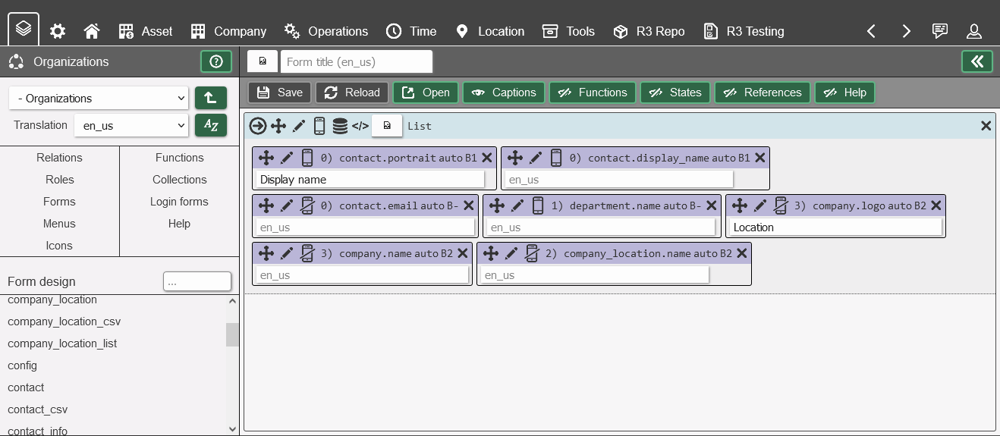
Columns each have a translated title to communicate their content to users. If no title is given, attribute columns can fallback to the attribute title. Besides titles, columns have multiple options:
- Size (pixel): A size in pixel (usually width) that a column attempts to populate. Can be used to limit the size or reserve space for important columns. If text wrapping is disabled, text values are cut off with '...' when they reach the target size or the available space is insufficient (up to a point).
- Length (characters): If set, text values in a column are limited to the specified length. Text values are cut off with '...' when they reach the specified length.
- Text wrap: Text values wrap to a new line when space is insufficient. Can be combined with column size and length settings to control how text is displayed.
- Column batch: In some cases, it is desired to merge two or more columns. Example: A single column showing both fore- & surname for employees. By adding two attribute columns (forename & surname in this example) and using a column batch, a single batch column is created. Column batches use a number to decide which columns are merged. Columns with the same batch number, when placed next to each other, result in a merged batch column. Only the title of the first column in a batch (first column from the left) is used as title for the entire column batch. The same is true for sorting: Only the first column in a batch is sorted by.
- Display: Similar to field display options. Depending on the attribute type of a column, different display options are available. These serve to specify how to present attribute values. Some examples: Displaying time values as formatted dates, showing color values as labels and hiding some columns completely.
- Data retrieval: Multiple options exist to configure, how column values are being retrieved for the list.
- Distinct: Useful when joining N:1 or N:M relationships or when using sub queries. Filters out duplicate values for the given column attribute.
- Group by: Records are grouped by the values of the given column attribute. Records with identical values for the grouped attributes are merged; this requires other attribute columns to either be grouped as well or aggregated.
- Aggregate: Use aggregation functions on the given column attribute. Like with 'Group by' this requires other attribute columns to either be grouped or aggregated as well. Aggregate functions follow well-known SQL standards (sums, counts, etc.) - there is one special case however for REI3: 'single record'. This is basically a 'FIRST' aggregation, taking the first available result from the group or aggregation set. 'Single record' exists to allow REI3 to still make a specific record selectable on the current list even with grouping and aggregations combining and merging results; this can be useful when working with complicated joins, but often can be avoided by using sub queries.
When designing complex lists with many joins, sub queries, groupings, filters and so on, logic errors or badly chosen configuration options can result in non-desirable data sets. To troubleshoot this, a SQL-preview function is available on the list field when inside the Builder. This function returns the raw SQL that is being used to retrieve the current list data. With this preview, you can directly see how the chosen options affect the final SQL query.
Calendar fields
Calendar fields work very similar to list fields. They have their own query like list fields and can use the same columns and configuration options. Please refer to list fields for detailed explanations.
Besides options that are also available to list fields, calendar fields have additional options for generating and styling the calendar entries:
- Date from/to: Attributes that define the date/time of shown records on the calendar. Given attribute values must be date or datetime and must not be mixed. If date values are used, only full day entries are shown on the calendar; if datetime values are used, both full day as well as non-full day entries are displayed.
- Color: (Optional) attribute value that is used to color in the date entries on the calendar. Should be combined with the 'Color' display option for text attributes to make inputting valid color values easy on data forms.
- Open record (relation 0): Open calendar entry (or create new one) in target form. Records must be compatible with chosen form (relation 0 of form must be the displayed record relation, see Queries).
- Gantt: A different presentation option for the calendar. All date entries are shown on a horizontal time axis instead of a calendar grid. This option becomes useful, when date records can be grouped by a common criteria. A group is defined by the value of one or more columns assigned to column batch 1 (see Column batches). Some use cases:
- Date records belonging to specific individuals, with their full names used for grouping.
- Availability time date records for departments, with their department names used for grouping.
- Combined availability time records for all members of a team, with the team name used for grouping.
Chart fields
Similar to list fields, chart fields access a defined query to receive and then present data. This is achieved by inclusion of the powerful open source visualization library echarts. REI3 ships with the full version of echarts, in theory supporting all available charts (see examples). There are however some implementation details to be aware of:
- The Builder does not offer visual configuration of all echart options - there is a huge number of them and they are expanded with new releases. Instead application authors can edit the echarts 'options' object, which gives access to basically all configuration options (see echarts documentation).
- For some simple chart types (bar, line, pie, scatter), the Builder offers some UI inputs. For more complicated types (like boxplots, funnel, etc.), the 'options' object can freely be used (see series). Legends, styles and many other elements can be configured this way. If the 'options' object is used, the Builder inputs can safely be ignored - they only help to fill the object initially or when using simple charts.
- REI3 fills in the dataset source of the 'option' object with an array of results from the chart field query. Every array element is itself an array of values, representing all chart columns in the selected order. When defining a chart, the dataset source is accessed by choosing the value index (0=first column, 1=second, and so on) in the series configuration.
- When using the 'time' axis type, the column display should be set to a time type (either 'date time', 'date' or 'time'); this will cause REI3 to automatically convert time values for echarts to properly display. If the display type is set to 'standard', the unix timestamps are used by echarts (unix timestamps are the native format of time & date storage in REI3, see date and time management).
Form states serve to change the behavior of fields; this is done by applying specified effects on fields based on form state conditions. Multiple form states can be used and will work in parallel.
Similar to query filters having one or many filter lines, form states have conditions. Each condition contains a connector (AND/OR), comparison criteria (field value, user role, etc.), an operator (equals, greater than, etc.) as well as brackets to facility more complex comparisons.
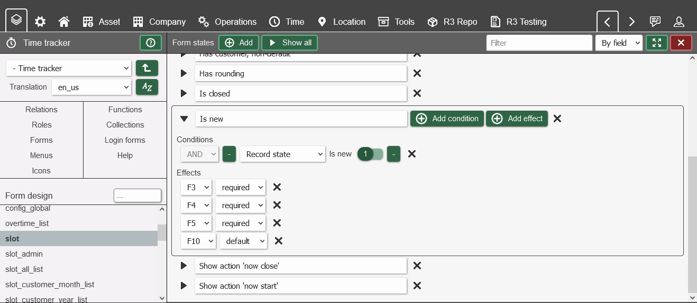
The following condition criteria are available:
- Field value: Current value of the specified attribute input field; hidden or readonly fields are also valid.
- Record state: TRUE/FALSE depending on whether the record being handled by the data form is new or an existing one.
- User role: TRUE/FALSE depending on whether the logged in user is member of a specified role; this includes roles that were inherited from role memberships. Only roles from the current application are available.
When conditions of a form state are met, its effects are applied to specified fields. Currently available effects are:
- Hidden: Available for all field types. If set, field is not shown. If field is a container, all its children are hidden as well.
- Default: Field is managed automatically. If it is an attribute input field and not set to 'nullable', it is shown as 'required'. If the user is missing write permissions to the underlying attribute, it is shown as 'readonly'.
- Optional: Only attribute input fields. Field is optional.
- Readonly: Only attribute input fields. Field is readonly.
- Required: Only attribute input fields. Field is writable and required.
If multiple states would apply to the same field the last one is used. Form states are executed in order of their description, so numbered prefixes can be used to achieve a desired state execution order.
When editing form states in the Builder UI, fields are referenced by a unique field ID (F12 for example). This ID is used for referencing fields in form states and not used anywhere else. Make sure to save the form after adding new fields before adding states, otherwise fields cannot be referenced properly.
Queries
To show or manipulate data, frontend components (like forms or fields) need to know how to access the REI3 data storage. This is done by defining data access queries or 'queries' for short. When a form defines a query, it becomes a data form; list or calendar fields also require queries to access data. In short, queries control how data is retrieved and (if desired) updated or deleted. Because data is stored in relations, queries access relations to handle attribute values from data records.
To define a query, you start by selecting a relation. This is the 'base relation' or relation index 0. A relation index is a simple number, that uniquely identifies a specific relation within a query. Indexes are needed, because we can connect or 'join' relations if they are linked with relationship attributes; these index numbers define, which relation is referenced when we later create input fields or filters. Each joined relation gets its own, unique index number.
Because relations can also be in relationships with themselves (self-reference), we cannot use the relation name to uniquely identify a relation. Example: Relation 'employee' has a relationship attribute 'superior' ('an employee has a superior') to connect to itself (the superior is also an employee). In this example, relation index 0 would be 'employee', which is joined to relation 'employee' with relation index 1. When adding input fields, we can then choose to access the employee (relation 0) or its superior (relation 1) and create attribute input fields on our form accordingly.
When joining relations with each other, there a couple of options to consider.
- Join type: Only relevant on joined relations (not base relation). Values: (F)ull, (I)nner, (L)eft, (R)ight. These values define, how the join handles its relationship. An inner join, for example, only receives records for a relation, if the relationship partner is valid, while a left join still shows the relation record even with no valid relationship partner. These values directly follow common relational database systems; for more information please lookup 'SQL joins' from external resources.
- Record handling: The following options define how records of specific relations are handled. Relation 0 is the most import one as its record is the base that is opened on forms or accessed on list fields. Joined records from other relations are available as well and are created/updated or deleted based on the defined options below.
- (C)reate: If set, a record can be created by a form or, if set for list fields, an option to open a pre-defined form is offered (see List fields).
- (U)pdate: It set, a record can be changed by a form. List fields cannot yet do record updates - this will likely come in a future release.
- (D)elete: If set, a record can be deleted by a form or, if set for list fields, an option to delete one or many records is shown.
- The record handling options directly affect the specified relation. Example: If relation 0 is set to (C)reate and a joined relation 1 is not, only the record for relation 0 can be created and all input fields for relation 1 are presented as 'read only' on the form. The same with (U)pdate and (D)elete: Only records from relations with these enabled can be changed when the base record (relation 0) is updated or deleted.
Queries can be defined for the following entities:
- Forms: What records are handled on this data form. A form can only ever manipulate the record of its base relation (index 0), together with the records of all joined relations.
- List/calendar fields: What records are shown in the list/calendar. Usually a list/calendar is used to display records, which are then opened on a data form to make changes to these records (see Open record (relation 0)). These fields show all available records from the defined relations within the defined filter criteria.
- Sub queries: These can be used as filter criteria or as column values in list/calendar fields. They return a single attribute value that can be used as condition or to display values, like aggregations in list columns.
Besides selecting relations, if more than one record is to be handled (lists/calendar fields), sorting can be applied to the results. Sorting is applied to the selected attribute (chosen via relation index + attribute name) in the defined order; when multiple sorting options are defined, results are sorted by the first, then the second and so on.
Query filters
As the name implies, query filters serve to filter query results. They are used by frontend components like forms, lists, fields showing relationship attributes, collections and so on. Since the frontend is running on a users device (e. g. browser), its code can be manipulated and query filters overwritten or removed. To filter access to sensitive data, relation policies should be used instead; relation policies are handled by the backend, are automatically applied independently of frontend components and cannot be manipulated by the user.
Filters are made up from filter lines. Each line contains an AND/OR connector (first line is always AND), two filter criteria (to compare them) and a comparison operator (equals, greater than, etc.). Additionally filter lines can be grouped with left and right brackets to create more complex AND/OR conditions. Some operators do not require a second filter criteria - 'IS NULL' for example just checks the first criteria against NULL.
Query filters can be defined in two ways:
- (Regular) filters: Automatically applied on any data access. Depending on filter conditions, different data can be shown in different contexts (logged in user, role membership, active interface language code, and so on). Caution: If login or role conditions are used in relationship inputs, already selected values can be filtered out depending on the active user, changing the current value of a field without any user action. Usually in these cases, input filtering is desired - this can be achieved by using filter sets instead (see below).
- Filter sets: A filter set is a named collection of filter conditions. Multiple filter sets can be defined for a query. Filter sets can serve different purposes:
- Sub selections: Wherever filter sets can be used (lists, calendars, Gantt, ...), if at least 2 sets are defined, users can choose between them. This enables result subsets in lists (like only 'active' or 'closed' records) and in input dropdowns ('show only colleagues in my department' or 'in entire company'). The first filter set is activated immediately until its changed by a user. If multiple sets are desired but everything should be shown by default, create the first filter set without any filter lines.
- Input only filters: Relationship inputs can be filtered with user context dependent conditions (login/roles). Using regular filters will affect the current field value without user action (if login condition results in different/less data). Using a filter set, enables filtering to be limited to the value input (dropdowns usually) and will not affect existing field values. If a single filter set is defined, the user will not be presented with a choice between filter sets.
The full list of filter criteria:
- Attribute value: Current record value for the specified attribute. Not affected by changes on a form until they were saved.
- Collection value: Value(s) of the selected collection. Most comparison operators (=, <, >, etc.) deal with single values (e. g. XY is larger than Z) - in these cases the first collection record value is used, so it should be a collection that only returns a single record. Some operators deal with arrays or multiple values (ANY, ALL) - these work against all record values of a collection.
- Field value: Data field value on the current form. When the chosen field value changes, the filter is updated and the connected query filter automatically reloads.
- Fixed value: A fixed text or number value to compare against.
- Login ID: Integer ID of the logged in user. Can be combined with the field display option Login or Login forms to connect relation records to REI3 users and then filter relations based on the logged in user. Useful for employee, customer, agent or other person-based records.
- Login language code: The selected 5-letter language-code ('de_de', 'en_us', etc.) of the logged in user. Can be used to join relations for translating user definable records and then filter these according to the active user interface language.
- Login has role: TRUE if the currently logged in user has the selected role (directly assigned or inherited).
- Preset record ID: Integer ID of the record that has been created from a preset. Only protected presets can be selected, as unprotected presets can be deleted.
- Record ID: Integer ID of the currently handled record from a data form. Only useful when query is being executed on a data form.
- Record is new: TRUE if record being handled by the current form is new. Only useful when query is being executed on a data form.
- True value. Always TRUE - used to compare against other TRUE values.
- JavaScript expression: The return value of the given JavaScript expression. The expression is executed as a function when the filter criteria is being checked. Useful for simple date calculations (like getting the previous year) or similar tasks. Should not be used to access anything outside the function itself.
- Sub query: The value from a sub query. Value type depends on the selected attribute from the defined sub query.
Help pages
REI3 offers two methods for applications to provide documentation to users:
- The global application help. This help page is accessible on every form by clicking on the question mark.
- Form context help. This help page gives details about dealing with a form. It is accessible on the specific form for which it is set by clicking on the question mark.
Both help pages are translatable and accessible via the question mark button that is shown on every form. If the form context help or application help page is not set, the corresponding entry is grayed out. If neither is set, the question mark is grayed out.
Translations
REI3 is a multi language system. By adding translations to your application, you expand the number of available languages that your application can support. However, adding a language requires you to provide translations for many entities. For some entities, REI3 can use fallbacks - it is however important to test your application thoroughly when adding a new translation.
The following entities are translatable:
- Application title: Shown in the main header and start page of REI3. Configured in the application overview (Builder start page).
- Attribute title: Shown as filter criteria in lists and as fallback for data field & column titles if these are not set.
- Role title & description: Shown in admin UI. Serves to explain role usage to administrators.
- Form title: Shown in form header. Can fallback to menu title if not set and if form is opened via a menu entry.
- Form help page: Shown in the help page if the specific form is open. Serves as contextual help for a form.
- Field title: Shown in form over a field. If it is a data field and has no title, it uses the attribute title as fallback.
- Field help text: Shown in form under a field. Additional context help for how to use a data field.
- Column title: Shown in lists. Describes the content of a column. Can fallback to attribute title if not set. If column batches are used (see List fields), only the title of the first column is used.
- Menu title: Shown in application menu. Can be used as fallback for form titles if these are not set.
- Application help page: Shown in the help page, independent of which form is open. This is the global application help page that is always available.
Every translation is referenced by a five-letter language code, such as 'de_de', 'en_us', and so on. A user can choose one language code as their interface language out of a pool of codes from all installed applications. If your application does not support the user-chosen translation, your defined fallback translation will be shown instead (configurable in the application overview).
You can also use translations for presets or live data. By using the filter criteria 'language code' you can join (see Queries) and filter relations based on the currently active user translation. As an example: You can define preset states for a workflow ('new', 'approved', ...) and create a second relation that serves to translate these states. By using one attribute for the language code and the other for a N:1 relationship to your workflow state, you can add multiple translations for each workflow state. Then you only need to filter to the currently active language code. Many REI3 applications use this method for customizable and translatable state records - you can look at the application 'Absence' as reference.
Icons
Icons serve to help users recognize entities or navigate the application in different user interfaces:
- Application: Assigned in application overview (Builder start page). Shown in all places the application itself is referenced (home page, admin panel, Builder).
- Menu: Shown before each menu entry. Also shown before the form title, if no form icon is set and the form is opened by this menu entry.
- Form: Shown before the form title.
- Attribute: Default icon for attribute input, shown if a field is handling attribute data and no other field icon is set.
- Field: Depending on the field type, usually shown before an input.
Icons must be added as PNG files with at most 64kb. The system expects icons to have equal height/width - other ratios are possible but may not be displayed correctly. To achieve non-squared icons, the icon image can use paddings with transparent background.
When Building on applications, you can re-use icons from other applications to refer to foreign entities. Re-using icons can help users to understand what entities are being handled.
Menus serve to navigate between and inside applications in REI3. Two types of menus exist:
- Main menu: Shown at the top of the page and on the start page for each user. Automatically created by resolving accessible applications for the current login. The header menu shows the top level of applications as well as a second level of assigned to applications (child applications). Currently only 2 levels of hierarchy are supported. The display order can be defined in the application overview (Builder start page) with the default position; this option can be overwritten in a target instance inside the admin panel. An application is only shown in the main menu, when a start form has been defined and a user has access to it; this includes admin users.
- Application menu: This can directly be defined in the Builder with unlimited levels of hierarchy; we recommend to keep the menu hierarchy to at most 3 levels for usability reasons. Each menu entry can optionally open a form and/or contain sub menu entries. When sub entries are defined, you can choose whether these entries are shown by default or must be toggled first by opening the parent menu entry. The translatable menu title as well as menu icon are applied to an opened form if the form does not define its own title/icon.
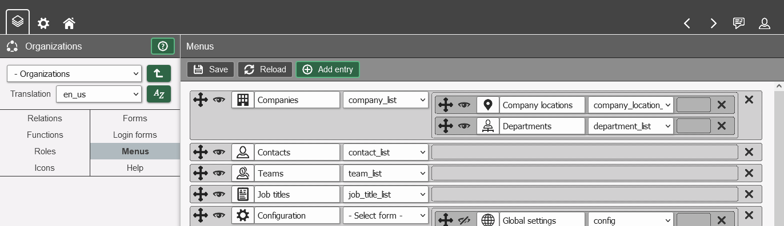
When Building on applications, you can choose to copy the entire menu structure from another application. This is can be useful when you intent to extend another application; you copy the original menu structure, change target forms and add your own, custom menu entries.
Sometimes it is useful to connect the currently logged in user to a record from within your application. To assign a personal, employee or a customer contact record for example.
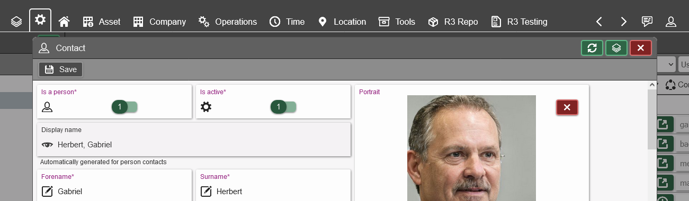
To enable this, an integer attribute can be placed on any of your relations. This attribute will then contain the login ID (which also is an integer). Once the login attribute exists, you have two options to update it:
- Define a login form: By defining a login form, an instance administrator can create/select a record for each login within the admin interface. Available options:
- Login attribute: The integer attribute that will contain the login ID.
- Lookup attribute: The text attribute that will be shown (and can be searched by) inside the admin interface.
- Form to open: The form that opens, when creating/updating a login record inside the admin interface. This form must use the login attribute´s relation as base relation (index 0).
- Place an input field on any form with the display type login: This way non-admins can update the login attribute on any defined form if they have write permissions. Please be aware, that this exposes all usernames of the instance as they need to be selectable inside the field input.
Functions
With functions, authors can greatly expand the capabilities of their applications. Basically, functions are executing pre-defined code that the application author prepared. Depending on the type and trigger of the function, they can do different things. In general, REI3 supports 2 function types:
- Frontend functions: Functions that are executed on the 'frontend', e. g. where REI3 is shown to the user. This is the browser that a user opens to access the REI3 application. Frontend functions can run calculations, update input fields, navigate the user to different places and more.
- Backend functions: Functions that are executed on the 'backend', e. g. where REI3 is hosted. This is the server that REI3´s database is run from. Backend functions are used to update data, block invalid inputs, enforce standards and so on.
Frontend functions
Frontend functions execute JavaScript within the user´s browser. How JavaScript works and how it is written is not part of this documentation - please refer to documentation for this language. For examples of how these frontend functions are written, you can install other REI3 applications as reference.
By using frontend functions, applications can execute logic based on frontend events. Some examples:
- User opens a form.
- User saves changes to a record.
- User changes the value of a field.
Frontend functions can be used in a 'global context', which means that they can be used und reused throughout the application. This is useful for general helper functions, like validating inputs, logging access or converting values (like time conversions or Markdown to HTML).
You can however bind a frontend function to a form. This means that it can only be used in the context of the form, but can therefore access form entities like input fields. These functions are usually used for data manipulation/validation purposes.
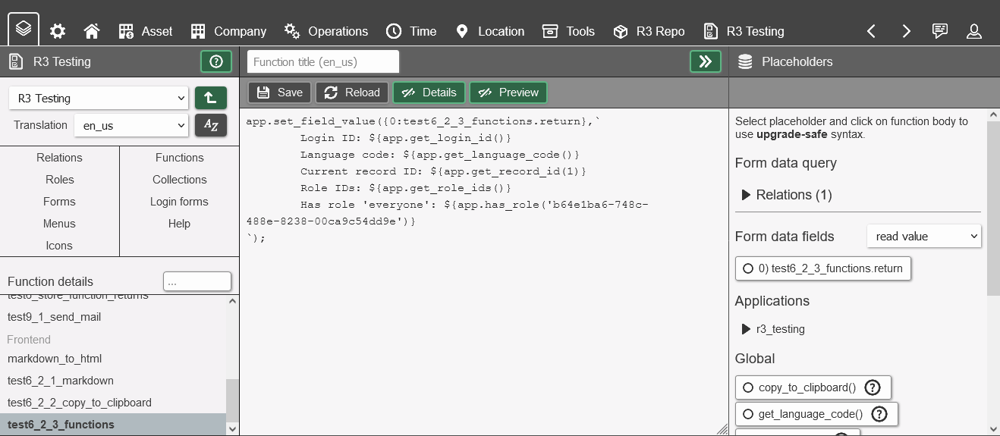
Within the function code, dynamic placeholders are used to reference other entities like other functions, input fields and so on. Placeholders are important as they protect your function when you make changes to referenced entities.
Frontend functions can also call 'instance functions'; these are exposed functions that can be accessed to interact with the REI3 system directly. Instance function can check a user´s role membership, navigate the user to different places, copy values to the users clipboard, execute backend functions, and more. To learn more about specific instance functions, you can read the contextual help that each function provides.
Backend functions
Backend functions in REI3 are PL/pgSQL functions. PL/pgSQL (Procedural Language/PostgreSQL) is a programming language of the underlying database system that REI3 is running on (PostgreSQL). To learn more about writing PL/pgSQL, please refer to documentation for this language. To start with, you can install other REI3 applications as reference.
By using backend functions, complex data manipulation tasks can be achieved, invalid inputs blocked and standards enforced. Backend functions can be triggered by relation triggers and called from other backend or frontend functions. They can also be regularly executed via schedules.
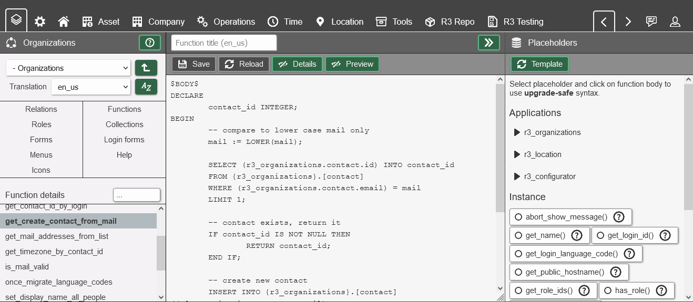
Within the function code, dynamic placeholders are used to reference application entities (relations, attributes and other backend functions). This ensures that changes are upgrade safe: Referenced entities can be renamed safely, while deletion is blocked. Using these placeholders, your functions are protected against breaking changes, while you work on your application.
Backend functions also have access to 'instance functions'. These expose data or features from the REI3 instance. They can be used to read configuration settings (like the public hostname), get context information (like the login ID used to access the database) or execute tasks (like sending emails). To learn more about specific instance functions, you can read the contextual help that each function provides.
Collections
A collection is a data store that is available on the frontend, which can be accessed by other frontend elements (like form fields). It contains data based on a defined query. Depending on the selected columns and filters, a collection will retrieve records and their values. Collections are retrieved when a user logs into the system and updated when user permissions change.
Some use cases:
- As filter criteria in field query filters: When complex or expensive filter criteria are needed in a list view (for example, using multiple conditions and sub queries) it can be very useful to use a collection instead. Collections are retrieved once, expensive lookups are therefore not repeated on every list view. It also removes the need to repeat complex filters on other but similar views; the same collection can be referenced multiple times.
- As user filter for data fields (lists, calendars, etc.): Once a collection is defined within a query filter for a data field, they can be used to offer additional user filter inputs, in which a user can select from existing collection values to filter the current view.
- As default value for fields: Collections can also be used as default values for input fields, like adding values to a relationship input field based on the logged in user´s team memberships. They can also be used to support user configuration options for default inputs.
Collections can offer any data from the database, to be used on the frontend, independent of context. They have downsides however. As they are not regularly updated during a user´s session (usually only during login), their values might be outdated. When changing data, which should change a user´s visible records for example, the user would need to refresh the page. This limitation may not be relevant for all use cases though, as some entities (like state values) might rarely change or when the performance benefits are large enough that a rare page refresh is the lesser evil.
Building on applications
A major feature of REI3 is the ability to build on other applications. To access data, user interfaces, roles and more to extend functionality or to better meet niche requirements. Building on applications enables anyone to re-use parts of applications while adding their own, unique features. No license or permission is required to extend an existing application. Multiple applications can build on the same, original application, using the same or different sets of components.
If you want to extend another application, you create a new application that has access to the application you want to extend. This is done in the Builder start page by selecting a dependency with 'Depends on' when creating/updating an application. This enables access to different parts of the original, dependent upon application - to keep things simple, we will call this the 'parent application' from here on.
Extending applications means that every new version of your application requires the parent application to be installed as well. When exporting your application, dependencies (parent applications) will be included automatically.
NEVER make changes to parent applications directly. The Builder will not prevent this, but all changes will be removed when an update to the parent application is installed. To build on other applications, you make changes to your own application that can show and reference parts of its parent application(s).
Once your application has a parent, you can access the following components:
- Data (relations & attributes): Access to parent relations in relationships within the child application; effectively extending these directly (with 1:1 relationships) or creating new data structures attached to the parent relations. Parent relations & attributes can also be accessed in queries, enabling access to these as if they were part of the child application.
- Forms: Access to forms from the parent application as targets in lists, buttons or within menus. This allows for re-use of existing user interfaces.
- Menus: Access to menus from the parent application. It is also possible to copy an entire menu structure of an application to quickly recreate the parent, while making desired changes to specific menu entries.
- Functions: Parent functions (backend & frontend) can be accessed directly, while access to entities from within functions in the child application is also enabled. To keep applications upgrade safe, always use the provided placeholders when referencing entities in functions. This will not protect against deletions (see below) but will keep your application running when entities are renamed.
Extension scenarios
Depending on the specific case, different approaches to application extension are possible.
Accessing shared components
Extending applications can be useful, when working on very different applications that still need to access already existing features. An often used example is the application 'Organizations'. It offers organizational structures that many applications need but do not want to re-implement. By choosing 'Organizations' as parent application ('Depends on'), its components are available for, for example, using existing departments and employee data inside the child application. This can be used to build relationships with employees ('Assets being assigned to' or 'Workflows executed by') and avoids data duplication.
Implementing small changes
Another, common use case is the 'overwriting' of existing applications. When an application does 90% of what is needed, but requires alteration or extension. By extending the parent application, the original menus and forms can be accessed for the parts of the application that fit with the existing requirements. Missing features or desired changes to user interfaces can then be implemented by creating new relationships & forms in the child application and changing the menu references accordingly. At last, the parent application can be hidden with the admin UI or its roles not be assigned to only give access to the 'overwriting' application.
Important considerations
User access
Accessing parent components is simple within the Builder. Users, however, still require privileges. A good practice is for applications to define separate 'data only' roles (just data access, no menus) that can be inherited by child application roles to give users access to data without immediately showing all the parent´s UIs. When designing your own applications, you should always consider setting up 'data only' roles so that applications building on yours will be able to easily integrate.
When 'data only' roles are not available, parent roles can still be inherited, while the parent application would then need to be hidden with the admin UI. This is not ideal in some use-cases but allows for dependencies with applications that do not follow good practices.
Deletions
Another important consideration is that application authors can decide to delete entities. Dealing with renamed or changed entities in applications is handled by REI3 automatically (except in functions when placeholders are NOT used); it´s a different story when referenced entities in parent applications are deleted. Deleting an entity is blocked by the Builder if a referring child application is installed in the same instance. Unfortunately, other application authors might not know about your application and/or might not have it installed in their instances, so REI3 cannot always prevent this situation.
When an updated parent application is attempting to install itself in a REI3 instance that still refers to a now deleted entity, REI3 will block this installation. This protects the currently running system from breaking but will cut off future updates for the parent application. As this is usually not a desirable state, application authors need to address this situation. The process usually goes as follows:
- Identification of the change reason. Why was this entity deleted? Was it moved to another application? Is the parent´s application author not interested in keeping it? etc. To learn this, the author can be contacted or the newer application version installed in a different REI3 instance to check the changes directly.
- Once it is clear, why the change occurred, the situation can be addressed. If only UIs were deleted, these can easily be recreated or different ones referenced with a newer application version. When data is affected that needs to be kept, a new application version (still referencing the older, valid parent) can offer CSV exports for the 'old' data. Then the child application is updated to remove the old reference, update to the new parent version and offer an CSV import for the old data to be re-imported. Depending on the reason for the removal from the parent application, either new data entities will be referenced (if they were moved) or data entities might need to be re-implemented inside the child application (if they were removed).
Because the process of fixing references, especially for data (relations/attributes), can be a lot of effort, always consider keeping outdated data entities, at least for a couple of releases. Even if they are going to be removed eventually, keeping them in the system allows dependent authors to more easily migrate data to the new data structure. A good practice is to rename relations / attributes that are to be removed and only removing them after a year or two; this gives dependent application authors time to react to these changes.
Application transfers
An application transfer is the process of exporting a signed and compressed version of an application from one REI3 instance and importing it into another. Any installed application can be exported from any REI3 instance with the Builder. It does not matter if the application was originally built inside the running REI3 instance or was imported. It is also irrelevant who the original author was. There is no encryption or obfuscation added at any point.
To protect against unknown sources, REI3 instances employ a list of trusted public keys. The public key of the central REI3 repository is included in all instances by default. To export applications, you need to provide your own private key for signing them. The Builder includes tools to create new RSA key pairs for convenience. The private key should be considered highly sensitive. If you are not familiar with handling secure key pairs, please refer to external resources to learn more.
Exporting applications
Applications are exported on the Builder start page. To start the export process you select the desired application and run an export check. This check will compare the current state of the application to the last known version. If any changes exist, a new version must be created before an export is possible. By creating a new version target instances understand that there are changes to apply. In order to export any changes, an application must be set to 'export changes' in the admin UI for applications. You should only do this for your own applications.
Important notice: When you build on applications from other authors, these are dependencies that are automatically exported together with your application. To protect against accidentally making changes to applications from others, all applications are in the state 'do not export changes' by default. While in this state, the last imported version of the application is exported and not the potentially changed version, accessible in the Builder. If you decide to export new versions for applications built by others, you potentially risk loss of your changes as well as data loss, when a new version from the original author is installed. You can safely build on other applications without making direct changes.
Ultimately, the export will generate a compressed zip file, which includes your application and all its dependencies. Within the zip file, each application is represented as a *.json file, which contains the corresponding application structure and a signature, created with your private key. Applications that were not changed are exported as they were with their original signature.
Importing applications
Applications can be imported to REI3 instances in two ways:
- By importing an application package file.
- By importing an application from a repository.
When you attempt to import your application into another REI3 instance, the signature of the application is checked against a list of trusted public keys. Only applications which signature can be successfully compared to these trusted public keys can be imported. You can add your public key to any REI3 instance within the admin UI.
Applications are either installed or updated when they are imported. All changes made to the applications or their dependencies are automatically applied by REI3. Should there be a problem, the entire import process is reverted even if multiple applications were affected. Import issues can be checked inside the admin UI by increasing the log level for 'transfers' and repeating the import.
Hosting a repository
When running many local or offline REI3 instances, it can be sensible to host your own REI3 application repository. It is also possible to host your own repository in the cloud, accessible to anyone. This is done by setting up a REI3 instance and installing the 'REI3 repository' application; this is the same application we use to host the central REI3 repository.
Once running and reachable on a network, the repository must be added to target REI3 instances as well as the public signing key(s) for corresponding applications. After that the repository meta data will be pulled from connected instances and applications will be available for install/update.
Optimizing for mobile devices
All REI3 applications work on mobile devices without doing anything special. Graphical elements, like forms, menus, input fields and so on, are designed to look and work well with different screen sizes.
While it is true that all applications are usable on mobile devices, some adaptations should be considered to improve usability. It is for example possible to use the same large, full page lists on mobile as on a desktop - they will work the same and will look good enough. However, it is much easier to deal with list views on mobile devices, if they do not scroll in multiple directions. The same is true for complex forms. REI3 will size and scroll on smaller devices, but adapting forms will often result in a better user experience.
Multiple options exist to adapt applications for smaller screens:
- Lists and calendars have a 'mobile device' toggle for each column. If toggled off, these columns are not shown if the screen size is too small. In most cases it is easier for mobile device users to see less on a list/calendar and click on a specific record to get details than to scroll a large view.
- Forms offer hiding of specific fields/containers for mobile devices. While it is not useful to hide important input fields, on some forms, related data is shown because there is more screen space available; these fields can be hidden on mobile devices to make form handling easier.
To simulate mobile devices, resizing the browser window is sufficient - REI3 will switch to mobile view when the screen space reaches a specific threshold. With small adjustments, existing forms/list views can be adjusted for better usability on mobile devices without sacrificing functionality. Even if applications are not meant to be used on these devices, it is always welcome when no other device is available und the application just works.
Working with emails
REI3 can retrieve emails from IMAP mailboxes and send emails with SMTP. Mail functions are executed by a central mail spooler, included in every REI3 instance. This spooler periodically fetches and sends emails with defined mail accounts.
To enable mailing features for different applications within the same instance, unique mail account names can be chosen by administrators. These account names can then be used in backend functions to process messages coming in from (or be send with) defined mail accounts. By adding corresponding options in their applications, authors can let administrators choose the appropriate mail account.
Sending an email
The instance function 'instance.mail_send()' can be called from any backend function from any application. Specific parameters include mail related meta data (like recipient, subject line and mail body) as well as optional parameters for attaching files from file attributes and for using a specific mail account to send with. Each time this function is called, a single email is created. More details can be found in the help text for this function in the Builder.
The mail spooler periodically dispatches emails - if no account is specified, a random account is used. HTML emails can also be sent; usually created from the value of a record´s text attribute, filled by a richtext field input on an email send form.
Receiving emails
If receiving mail accounts are specified, the mail spooler periodically fetches emails and their attachments. With the instance function 'instance.mail_get_next()', any application can request the next available email from the mail spooler, optionally filtered to a specific account. The idea is to call this function in a loop until all emails are processed; this function returns NULL when no more emails are available. Once an email is processed, it should immediately be deleted; if this is not done, it might be processed twice. Because of that 'instance.mail_get_next()' will return the same message again if it was not deleted. More details can be found in the help text for this function in the Builder.
To delete a processed email, two options exist:
- Delete it right away with 'instance.mail_delete()'. Used when no attachments are to be handled. Email is immediately deleted and attachments (if there) are lost.
- Order REI3 to copy the email attachments and then delete it with 'instance.mail_delete_after_attach()'. Used when a record exists (or was created) with an files attribute that should receive the email attachments. REI3 will then transfer these files and update the record´s files attribute value accordingly - after which the email is deleted. This process runs in the background and might take some time depending on schedulers and attachment size; 'instance.mail_get_next()' will skip emails marked as such and return the next, unmarked email from the spooler.
Date and time management
When dealing with date and/or time values, it is important to separate different types. Dates, as in the 3rd of August 2020, are usually meant to be the same everywhere - the day might start later in a different timezone but we are talking about the same entity (as in 'day of a year'). Public holidays and vacations are often set to dates and have no time component. Date+time values (we call them 'datetime' for short) however, as in 3rd August at 12:30, are usually understood to be relative. When making an appointment with someone across timezones, we expect a system to handle the date & time relative to us but still allow everyone to meet at the same point in time.
In computer systems there are multiple approaches to store, manage and display date & time values. They can be separated, timezone information applied to or kept separately from the value itself and so on.
REI3´s implementation works as follows:
- All date/time values are stored as unix timestamps. An unix timestamp stores time as an offset in seconds to a fixed point in time (which is '1970-01-01 00:00:00 at UTC').
- To store date/time values integer or bigint attributes are used. Unix timestamps require bigint when storing dates/datetimes bigger than '2038-01-19 03:14:08 UTC' as this is the maximum timestamp representable by a 32 bit signed integer.
- Date/time values are always stored as integers, but can be differently presented depending on the display option in the corresponding field or column:
- Dates: When displaying integer values as 'date' they represent a 'fixed day in a year' and are formatted as such. When entering a date, it is stored as midnight at UTC of the corresponding day. So choosing the 2nd August 2017 will be stored as unix timestamp '1501632000' or '2017-08-02 00:00:00 UTC'. Because all date values are stored as midnight, they can directly be compared. Timezone information is not stored or used at all in this context.
- Time: When displaying an integer as 'time' they represent a 'fixed point of time on a clock' and are formatted as such. When entering a time, it is stored as the offset to unix zero ('1970-01-01 00:00:00'). Because there is no date component, the highest possible value is the count of seconds until '23:59:59' (or 86399 as unix timestamp). This implementation allows comparison between time values. Similar to dates, timezones are not used in this context.
- Datetime: When displaying integer values as 'datetime' they represent a 'timezone adjusted date & time'. When entering a date & time, the local timezone is subtracted from the value and it is stored as the corresponding unix timestamp. When the same value is shown back to a user, its timezone will be added, showing the correct relative date & time. The relative date & time might be different, depending on timezone and daylight savings time - the point in time will be the same however. The timezone information that was used to enter the original value is not stored.
With this implementation, attributes storing dates must be handled separately to attributes storing datetimes or just times. As date/time values are not bound to timezones but datetimes are, displaying a date value as datetime will be wrong. Date, time & datetime values can directly be compared with values of the same type but not between each other. The only exception is the option of mixing dates & datetimes in date range inputs (combined from/to input) and calendars. This is useful when dealing with events and appointments in a mixed context. Without a date range, the right context (whether we have a date or datetime) cannot be safely assumed.
CSV import and export
Importing and exporting large data sets with CSV is done by enabling CSV options on any list field. After CSV options are enabled, CSV actions are available on the list field UI. There some things to consider when working with CSV:
- File attributes cannot be handled with CSV - they can neither be imported nor exported.
- Column batches should not be used. Example: A common column batch 'forename + surname of a person' is great for presentation but attributes (forename/surname in this case) need to be specifically addressable for CSV updates to be safe.
- For CSV imports, the relation join options (see Queries) define how records are handled. If (C)reate is enabled, new records are being created when they cannot be looked up, while (U)pdate allows updating of existing records. With multiple, joined relations, a single CSV line can create/update multiple records.
- To look up records during CSV imports, unique indexes are used. These can be selected as criteria in the query for the CSV list field. Unique indexes are created on the corresponding relation. If in the query dialog no unique index is available, the corresponding relation lacks one; in this case records can only be created, not updated. Make sure that all attributes used for the selected unique indexes are actually columns in the CSV list; otherwise required unique index components are missing and the index cannot be used.
Troubleshooting
Application is not shown to the user in the main menu
For an application to be shown in the main menu, these conditions must be met:
- The application must have a start form defined. The start form can be set on the Builder start page.
- The user must have access to at least one menu entry from the application. Access to menus is controlled by assigned roles.
- The application must not have been set to 'hidden' in the applications page of the admin UI.
Application fails to import in target instance
Many potential import issues are considered and automatically handled by REI3. If the import still fails however, you can increase the log level for transfers and repeat the import attempt; this will generate usable logs. To troubleshoot, here are some pointers:
- The import process is handled sequentially. First relations then attributes and so on. In some cases, entities can cross-reference (like form fields referencing other fields or presets referencing other presets). In these cases, the import process will skip the problematic entity and finish others first. It will then repeat the import process, skipping already imported entities. Import tasks rely on deferring constraints to allow for cyclical references. It will ultimately fail, if any issues still exist at the end of at most 10 loops.
- Some imports fail, because the application was released for an older version of REI3. Older applications can generally be imported without issues - but in some cases, very old applications might have trouble with current releases. In this case, you can import the application in an older version of REI3 and then upgrade the instance to your target version. During platform updates, applications are automatically updated as well. If you are the author of the application in question, you can then export your application from the newer release to avoid import issues for others. If you are not the author, please contact the author and ask for an updated version for your release.
- Some issues are not solvable because changes are just invalid in target instances. Examples:
- Adding a not-nullable attribute to an existing relation without default value. If your application is imported to an instance where an older version of your application already existed, the import can fail because adding such an attribute is invalid for existing records. The attribute must either be nullable or provide a default value to update existing records.
Application causes SQL errors
The Builder guides an application author to create valid data retrieval/manipulation logic so SQL errors usually do not happen. Due to the available range of options, some logic errors cannot completely be avoided however. Examples:
- Using 'GROUP BY' on some list columns, while others are not grouped or aggregated. This is generally nonsensical - if this issue occurs you must change these settings. You can also use the SQL preview in the form-builder UI to check/test the resulting SQL against your database.
- Using invalid operators, like comparing strings with 'larger than'.
- Having logic errors in functions. Besides offering placeholders for upgrade safe access to existing entities, the Builder will deliver an error if the function has invalid syntax. Logic errors however will not be caught. Please test your functions thoroughly.